Just three steps.
- Enter the amount.Type the number. No forms, no endless categories.
- Add a name. Optional“Flat white”, “Taxi home”: whatever helps you remember it.
- Swipe right.One swipe, and it’s saved.
- Expense added.Mono sorts the rest on its own.
A calm expense tracker. Type the amount, swipe, and get on with your day. Mono sorts the rest on its own.
Track expenses at the speed of thought. Forget complex forms and endless categories. Just type the number, add a name if you like, and swipe.
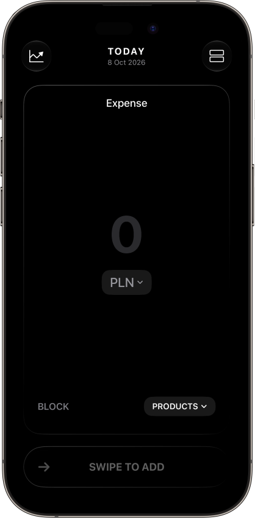
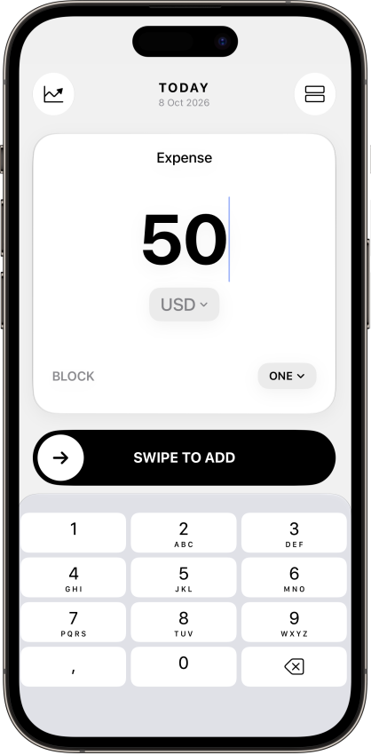
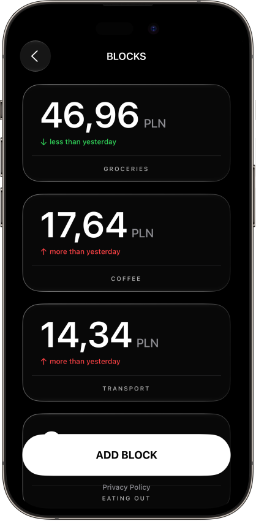
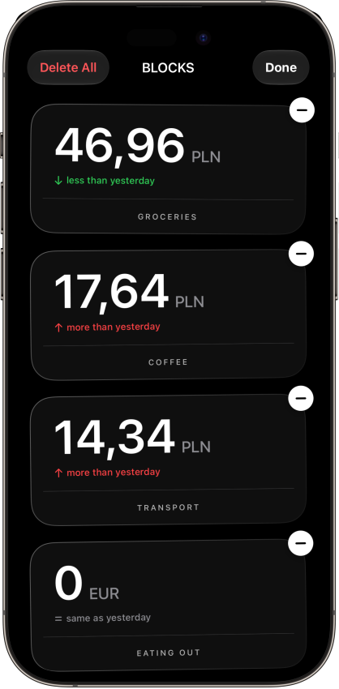
Organize your finances into custom blocks. Smarter insights without the clutter.
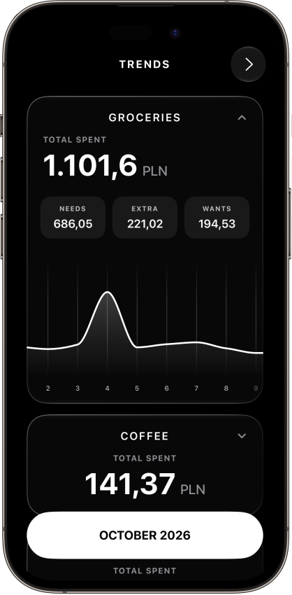
Mono learns your daily baseline and sorts every expense automatically.
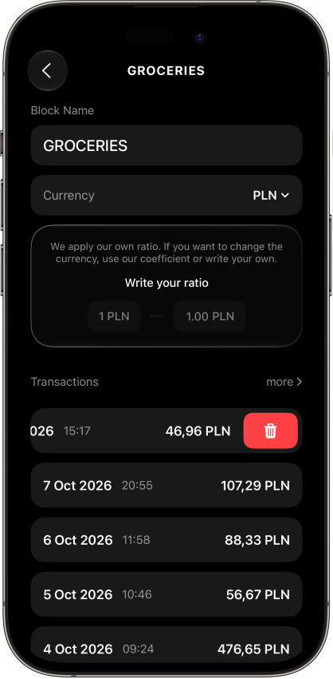
Seamless transaction history and custom block management.
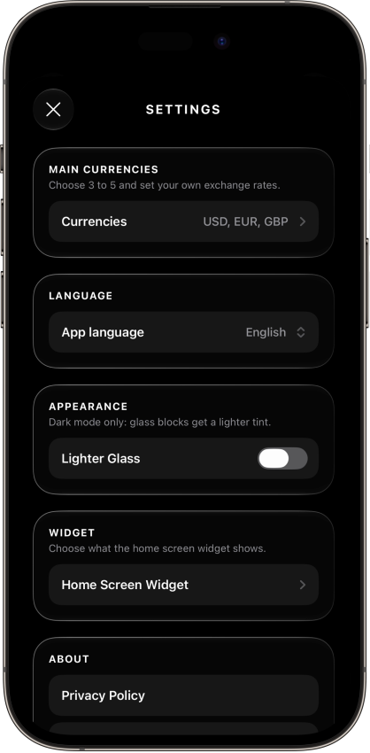
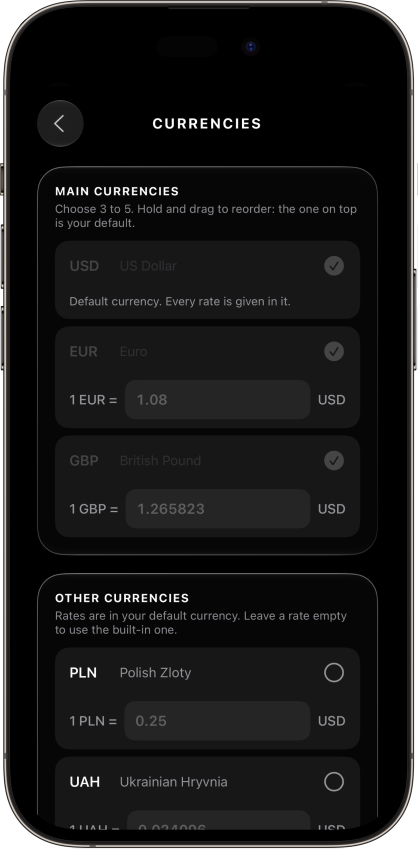
Set Mono up once, the way you spend. Everything else stays out of the way.
See where your month is going without opening the app. One tap to add an expense.
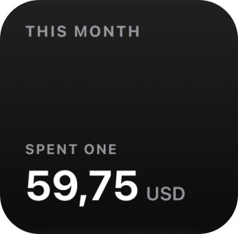
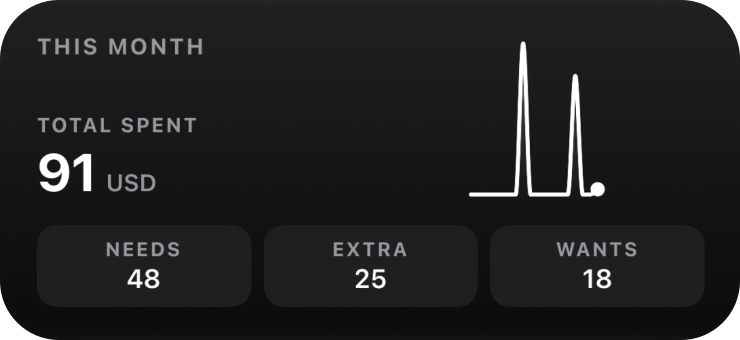
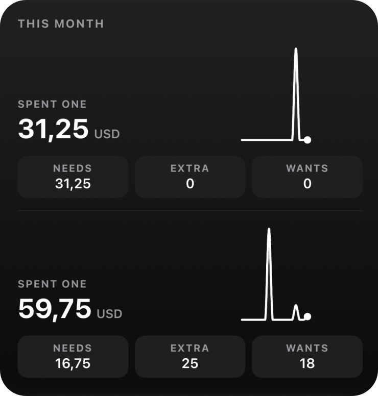
Choose what each size shows in Settings. Amounts and block names stay hidden while your iPhone is locked.
Your data stays on your iPhone. We never see it.
Mono is a minimalist personal finance tracker. You create spending categories (“blocks”) and log expenses manually. Mono does not collect any personal data. There is no account, no sign-up, no server, and no backend.
Everything you enter is stored on your device, using Apple’s SwiftData and UserDefaults. Mono never sends your data to the developer or to anyone else. Currency conversion uses rates built into the app, or rates you enter yourself, and makes no network requests.
iCloud Backup (optional). If you turn on iCloud Backup in Settings, Mono saves a copy of your blocks and expenses (their names, amounts, currencies and dates) in the private iCloud database of your own Apple Account, using Apple’s CloudKit. It is used only to restore your data, only you can access it, and the developer cannot see it. You can delete it at any time in the iOS Settings app → your name → iCloud → Manage Account Storage → Mono.
Mono’s database is protected with iOS Data Protection, so it can’t be read while your iPhone is locked.
Your Mono data may be included in your own iCloud or iTunes device backup. Those backups are controlled by Apple, not by the developer.
If you add a Mono widget, the app saves a small summary for it on your device: this month’s totals, the needs, extra and wants split, the daily totals for the chart, and the names of the blocks you chose to show. Individual expenses and their names are not included.
The summary is kept in a storage area that only Mono and its own widget can read, it is updated whenever your data changes, and it never leaves your device. Amounts and block names in the widget are hidden while your iPhone is locked.
We do not share, sell, or rent any data, and we do not track you. Mono contains no analytics, no advertising, and no third-party SDKs. No third parties receive any information from the app.
Your data remains on your device until you remove it. You can delete individual blocks and transactions inside the app at any time, or delete everything at once with Settings → Erase All Data. Deleting the app permanently deletes all of its data on your device, including the widget summary.
An iCloud Backup you made is kept in your iCloud until you delete it; Erase All Data and deleting the app do not remove it. Delete it in the iOS Settings app → your name → iCloud → Manage Account Storage → Mono.
Before an app update changes how data is stored, Mono keeps a temporary safety copy on your device. It is deleted automatically once the update has opened successfully a few times, or right away with Erase All Data, and it is never included in device backups.
Mono is not directed at children under 13. The app collects no data from anyone, including children.
Data protection laws such as the GDPR and CCPA give you the right to access, correct, and delete personal data held about you. Because Mono collects no personal data, we hold nothing about you, so there is nothing to access or delete on our side. All of your data is under your control on your device.
If this policy changes, the updated version will be posted on this page with a new effective date.
Questions about this policy? Contact us at misharomaniuk15@icloud.com.
Every trip becomes a travel note: cities, days, tickets and photos in one place. And when you’re back, your map fills in.
The note is ready in a second, with a photo of the country and the trip’s length at a glance.
Rome, then Florence, then Venice. Each city is a step, in order, with the days you’ll spend there.
Choose the next city and how you’ll get there: a flight, a train, a bus or the car.
Inside each city, give your places a day and a time. Or keep them for whenever.
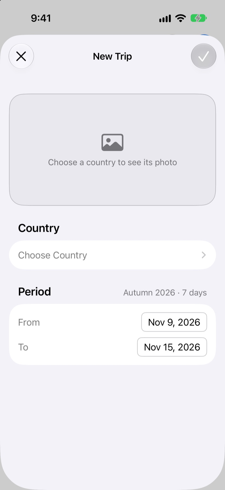
Add what you want to see, a reminder or a file to any city, on a day or not yet.
Flights become boarding-pass cards. Bookings and personal files sit next to them, even offline.
Swipe through the days and see what’s planned, when, and in which city.
Places without a day wait in their city. Add them to a day when you know.
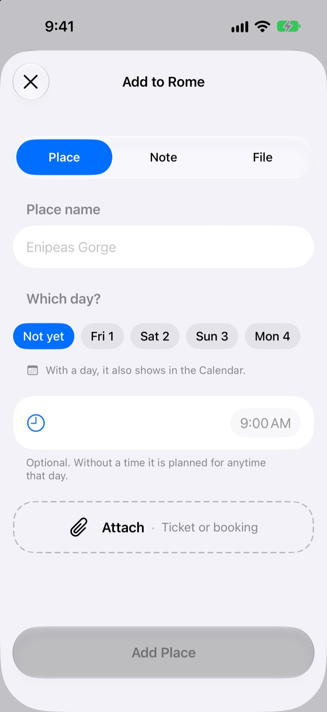
Finished trips colour in their countries. Countries, continents and cities add up.
One tap turns your map into an image: countries, cities and the share of the world you’ve seen.
Scan a friend’s code and see where your maps meet. It holds only a name, countries and a city count.
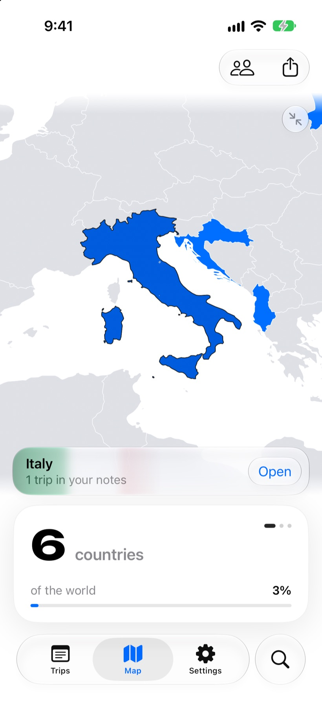
Finished trips move to the archive by themselves, each one a card with its photo, stops and days.
The cities, the days and the places, with an album for your photos. Share it as it is.
Share a trip with the friends you travel with, and plan the same note together.
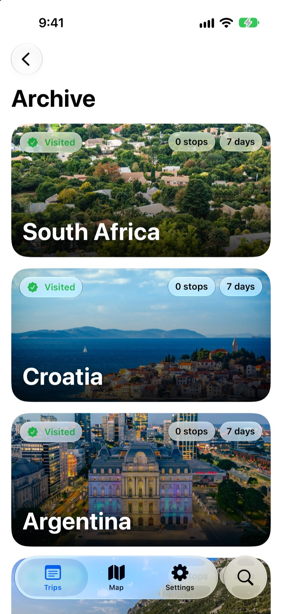
Your trips stay on your iPhone. We never see them.
Intent is a trip planner. You create trips, add cities, places, notes and files, and mark the countries you have visited. The developer does not collect any of it. There is no account, no sign-up and no server of ours that your data is sent to.
Everything you enter, the files and photos you add and the photos in your country albums are stored only on your device, in the app’s private storage. Settings such as the app language and the name on your shared map are stored on your device as well.
Your Intent data may be included in your own iCloud or computer backup of the device. Those backups are controlled by Apple, not by the developer.
Intent works without the internet, except for one feature that asks another service for public information. The request does not contain your trips, notes, files or anything that identifies you.
Intent uses the camera only to scan a friend’s map code, and only while the scanner is open. Nothing is recorded or saved. Photos and files are added only when you pick them, and copies are kept in the app. Reading the route from a flight ticket happens on your device.
Intent shares only when you ask it to. A shared trip contains that trip with its cities, places, notes and files. A shared map or map code contains the name you chose, the countries you have visited and the number of cities. You choose who receives them through the iOS share sheet. Trips and maps you receive are saved only on your device.
We do not share, sell, or rent any data, and we do not track you. Intent contains no analytics, no advertising and no third-party SDKs.
Your data stays on your device until you remove it. You can delete any trip, city, place, note, file or album photo in the app. Deleting a trip also deletes its files. Deleting the app permanently deletes all of its data.
Intent is not directed at children under 13. The app collects no data from anyone, including children.
Data protection laws such as the GDPR and CCPA give you the right to access, correct, and delete personal data held about you. Because Intent collects no personal data, we hold nothing about you, so there is nothing to access or delete on our side. All of your data is under your control on your device.
If this policy changes, the updated version will be posted on this page with a new effective date.
Questions about this policy? Contact us at misharomaniuk15@icloud.com.
A quiet place to pause, breathe and notice the small wins. Sileo is still on the drawing board.
Set a few quiet minutes, start the timer and do nothing at all. Sileo keeps count of your pauses, so the small wins add up.
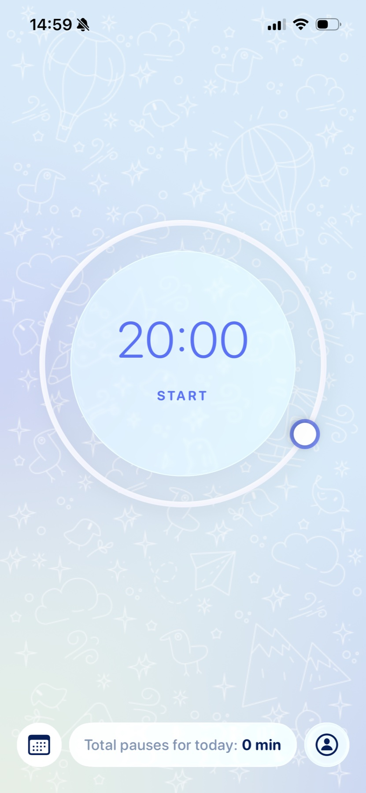
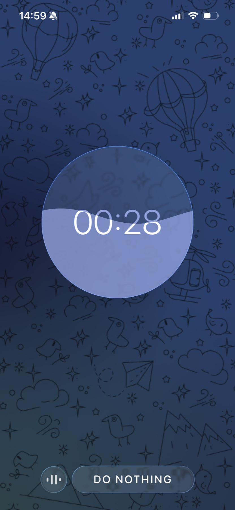